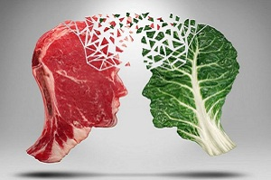

Вегетарианство – польза или вред?
Есть или не есть мясо — вот в чем вопрос. Хотя почему вопрос? Для приверженцев вегетарианства отказ от мяса давно уже норма жизни. А так ли полезна эта система питания, как утверждают ее последователи?
Плюсы вегетарианства
Что еще, кроме нравственно-моральных аспектов привлекает людей в вегетарианстве? По мнению приверженцев этой системы питания, отказ от пищи животного происхождения позволяет очистить тело от гормона страха, который выбрасывается в кровь животного в момент смерти. И хоть ни одно исследование не нашло этому научного подтверждения, вегетарианцы продолжают в это верить. Весьма спорным считается и утверждение, что отказ от мяса делает человека более мягким и менее агрессивным. Практика показывает, что японцы, которые в древности вообще не ели мяса, а питались в основном рисом и рыбой, никогда не были миролюбивой нацией, то же можно сказать и об Адольфе Гитлере, которые придерживался вегетарианства.
Впрочем, у этой системы питания есть неоспоримые плюсы. Среди них:
– низкий процент развития сердечно-сосудистых заболеваний среди вегетарианцев (растительная пища не содержит холестерина, который откладывается на сосудах, провоцируя развитие инфаркта, атеросклероза, инсульта).
– среди вегетарианцев практически нет людей с избыточным весом (растительная пища богата клетчаткой, которая быстро заполняет желудок, вызывая чувство сытости и при этом содержит мало калорий);
– низкий уровень развития онкологических заболеваний среди вегетарианцев (злаки, овощи и фрукты содержат большое количество витаминов и антиоксидантов, которые блокируют процессы старения и перерождения клеток).
Минусы вегетарианства
Основной недостаток вегетарианства в том, что эта система питания ограничивает поступление в организм человека белков животного происхождения. А ведь они важны для нашего организма, так как являются пластическим материалом для построения тканей, иммунных тел, форменных элементов крови. Многие вегетарианцы считают, что альтернативой животным белкам могут стать растительные белки, которыми богаты соя, горох, бобы, фасоль. Однако растительный белок отличается от животного по аминокислотному составу и гораздо хуже усваивается организмом.
Среди вегетарианцев очень распространены тяжелые формы анемии, а все потому, что с отказом от мяса они лишают себя такого важного компонента, как легкоусвояемого железа (особенно много его в красном мясе).
Не хватает вегетарианцам и витамина А, которым богаты мясные продукты. Да и минеральные вещества из растительной пищи усваиваются намного хуже, чем из продуктов животноводства.
Если все люди станут вегетарианцами, то ежегодное количество смертей на Земле уменьшится примерно на 7 млн человек. Также массово снизится риск ишемической болезни сердца, диабета, инсульта и некоторых видов рака.
Также выбросы вредных паров в атмосферу от производства мяса уменьшатся на 60%. А на прежние пастбища вернется утраченное разнообразие животных видов.
Однако фермерам придется переквалифицироваться и искать работу в сельском хозяйстве, лесовосстановлении или производстве биоэнергии.
Кроме того, отсутствие скота на пастбищах плохо отразится на биологическом разнообразии планеты.